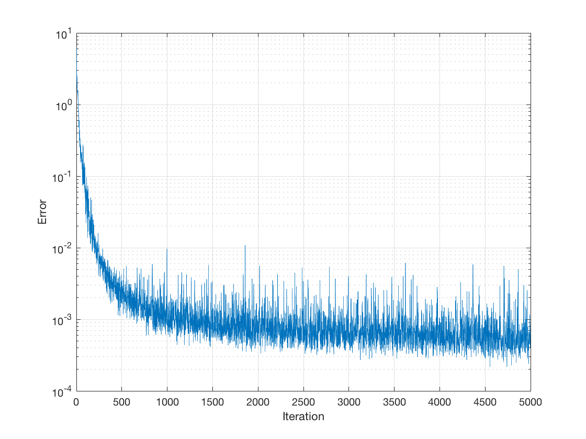
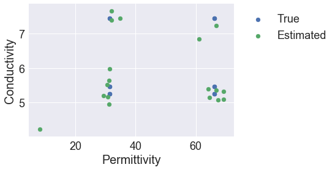
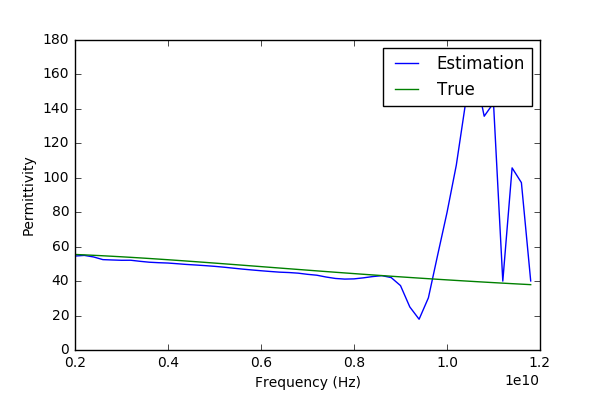
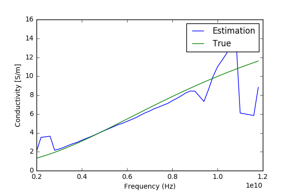

results¶
Some recent results using this technique are given below.
homogeneous tissues¶
Approximately 1300 simulations are performed with homogeneous tissues. The tissue properties are constant with frequency in each simulation. However, as will be seen below, we can still use these simulations to model dispersive simulations.
neural networks¶
We first examine a case using the time of flight and energy analysis as the preprocessing methods to be fed into the neural network. The time of flight provides information relating to the permittivity of the tissue, while the energy analysis relates primarily to its conductivity.
The neural network used has two layers, with 200 neurons in the first layer and 100 in the second. The ReLU is used as the activation function, and gradient descent as the optimizer. During the training process, the error with the training data is monitored as a measure of the quality of fit. We perform 5000 iterations of the gradient descent algorithm. It can be seen that we ultimately converge to a minimum of error.
{kind=link}
The testing data we use is performed as different dielectric properties and separation distances that the training data. We find good agreement between the true and estimated properties.
{kind=link}
elastic net regression¶
Next we examine elastic net models using the feature-expanded data from the reflected and transmitted magnitude and phase (the frequency domain analysis for preprocessing). Despite models being made independently for each frequency point, dispersive materials can be assessed.
 {kind=link}
{kind=link}
The dominant error is seen to come from the edges of the frequency band. One explanation for this is the cutoff frequency of the waveguide, where for low-permittivity materials the cutoff frequency enters the simulated frequency range, potentially compromising model generation. This could also be due to numerical errors in simulation. Simulations are performed using a Gaussian-shaped frequency band, where the tails of this band are lower intensity, making them more prone to rounding errors.
While these estimates appear promising as of now, bear in mind that in more complex environments they may suffer from effects such as multipath.